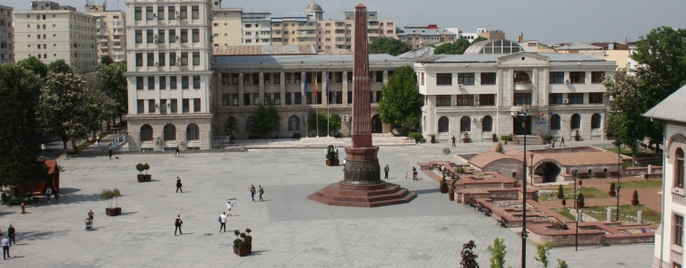

Municipiul Focşani
Focşani este municipiul reşedinţă al judeţului Vrancea. Este cunoscut drept „Oraşul de pe Milcov”, locul unde Ştefan cel Mare a stabilit hotarul dintre Moldova şi Ţara Românească în anul 1482. După Unirea Principatelor, Focşaniul este cunoscut drept „Oraşul Unirii”, devenind simbol al idealului de Unire, căci pe 6 iulie 1862, Alexandru Ioan Cuza a semnat decretul de unificare a Focşanilor, cel din Moldova şi cel din Ţara Românească, care până atunci fusese împărţit de râul Milcov între cele două principate.
Teritoriul judeţului Vrancea corespunde celei mai active zone seismice din ţara noastră, aşadar analiza factorilor de risc la nivelul municipiului Focşani trebuie să ţină cont în mod prioritar de acest lucru. Cele mai importante resurse naturale ale municipiului o constituie exploatarea terenurilor agricole aflate în extravilanul localităţii. Totodată, prin structura bazei materiale din sectorul economic, se asigură, prelucrarea a cca 56 % din resursele naturale ale judeţului.
Conform recensământului efectuat în 2011, populația municipiului Focșani se ridică la 79.315 locuitori, în scădere față de recensământul anterior din 2002, când se înregistraseră 101.854 de locuitori. Majoritatea locuitorilor sunt români (89,91%), cu o minoritate de romi (1,24%). Pentru 8,7% din populație nu este cunoscută apartenența etnică. Din punct de vedere confesional majoritatea locuitorilor sunt ortodocși (89,73%). Pentru 8,79% din populație nu este cunoscută apartenența confesională.